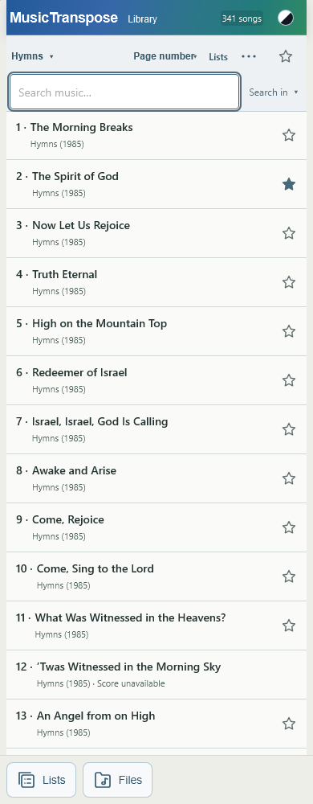
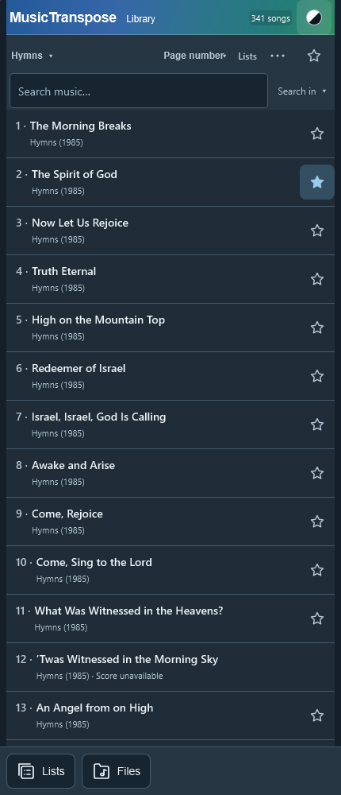
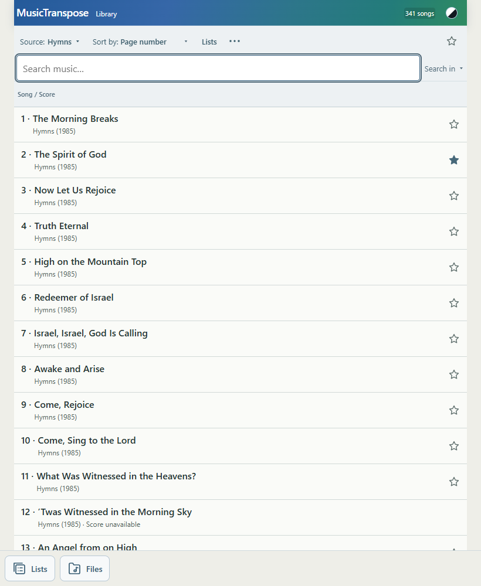
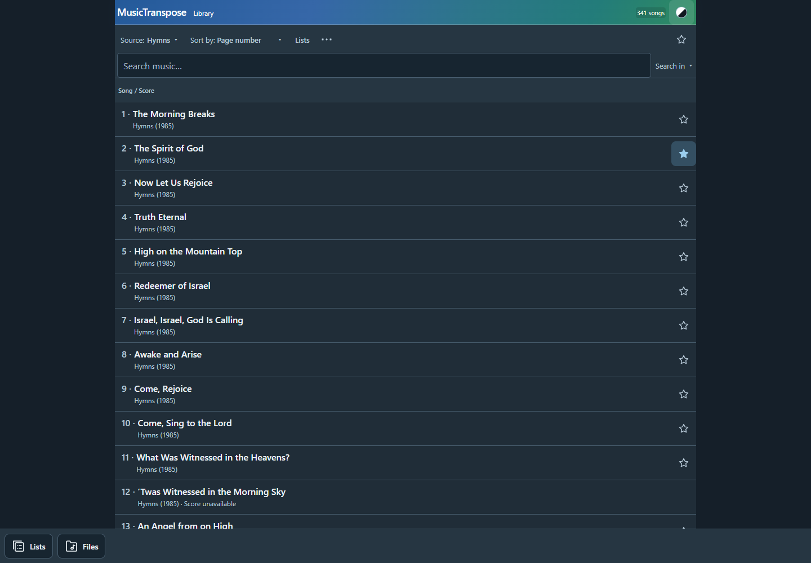

Library row polish
2026-10-04. Baseline: 3754897.
- Normal numbered row: “2 · The Spirit of God” / “Hymns (1985)”. Alphabetical row: title / source, without a repeated number below.
- Removed “Open · Return to score”, current-song class assignment, left accent/tint, current-label styling and obsolete light/dark selectors. Internal current-song/history state remains unchanged.
- Removed row key, tonic/mode, PDF/MusicXML/capability metadata. Files are identified as Files; source-specific collection presentation remains for built-in music.
- Unavailable entries retain “Hymns (1985) · Score unavailable” and their existing accessible label/dialog handling. Missing saved-list references retain their existing exceptional explanation.
- Title/page searches use the minimal row. “Matched page” is suppressed. “Matched lyrics” remains only when the existing matcher reports a lyric-only match, explaining why an otherwise unrelated title appears. Matching logic and defaults are untouched.
- List-specific aliases remain the title. Favorite, Edit and Order controls remain. Saved titles/data, sorting and filters are unchanged.
- Light/Dark checks passed at 390/430/820/1440px. Sampled normal rows measure 61px, song buttons 60px, Favorite targets 44×44px; no blank third line, action overlap or horizontal overflow.
- Focused test covers Hymns numbered/alphabetical, Children’s Songbook, HHC, Files, saved List alias, unavailable #86, page/title/lyric searches, Favorite toggle, and returning from a previously opened score without a current-row marker.
- Tests: node tests/library-row-polish.mjs; node --check library.js; git diff --check. No harmony or Score suites.
- Product files: library.js, styles.css, sw.js (v223). Added focused test and report/screenshots. Existing unrelated diagnostic files remain untouched.
- Commit and deployment status are reported in the completion message.
Measured geometry
390px light

430px dark

820px light

1440px dark
